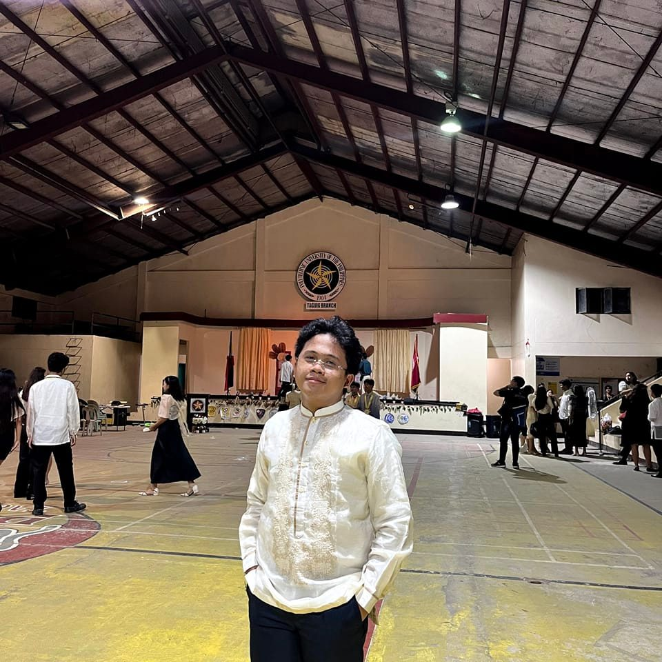
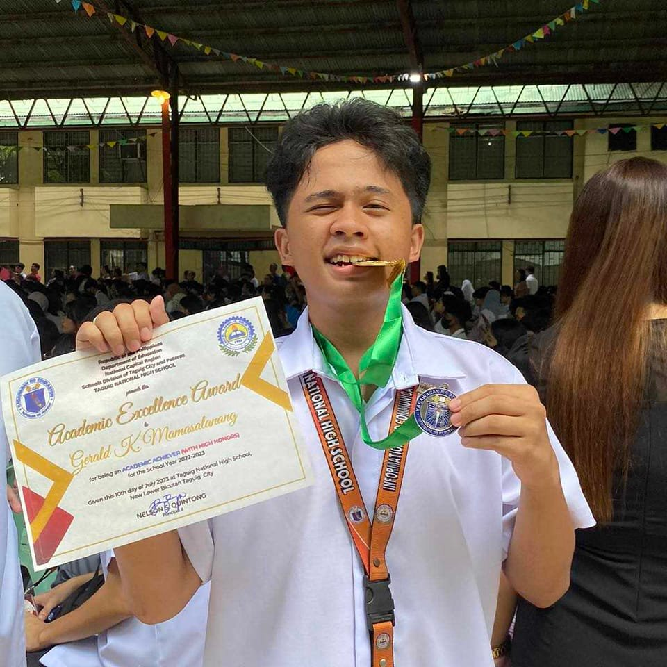
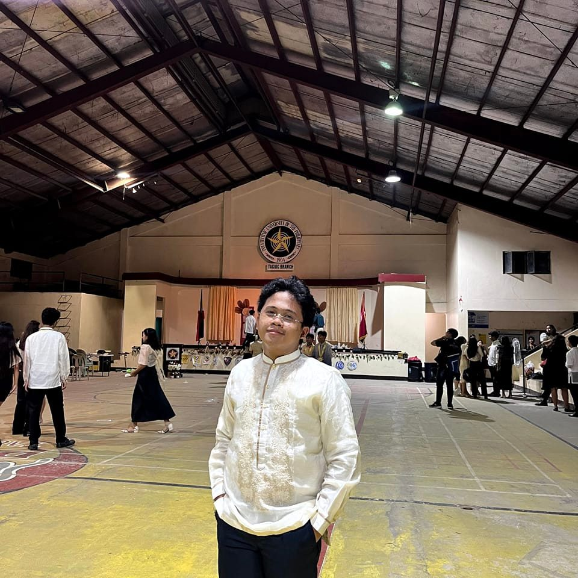
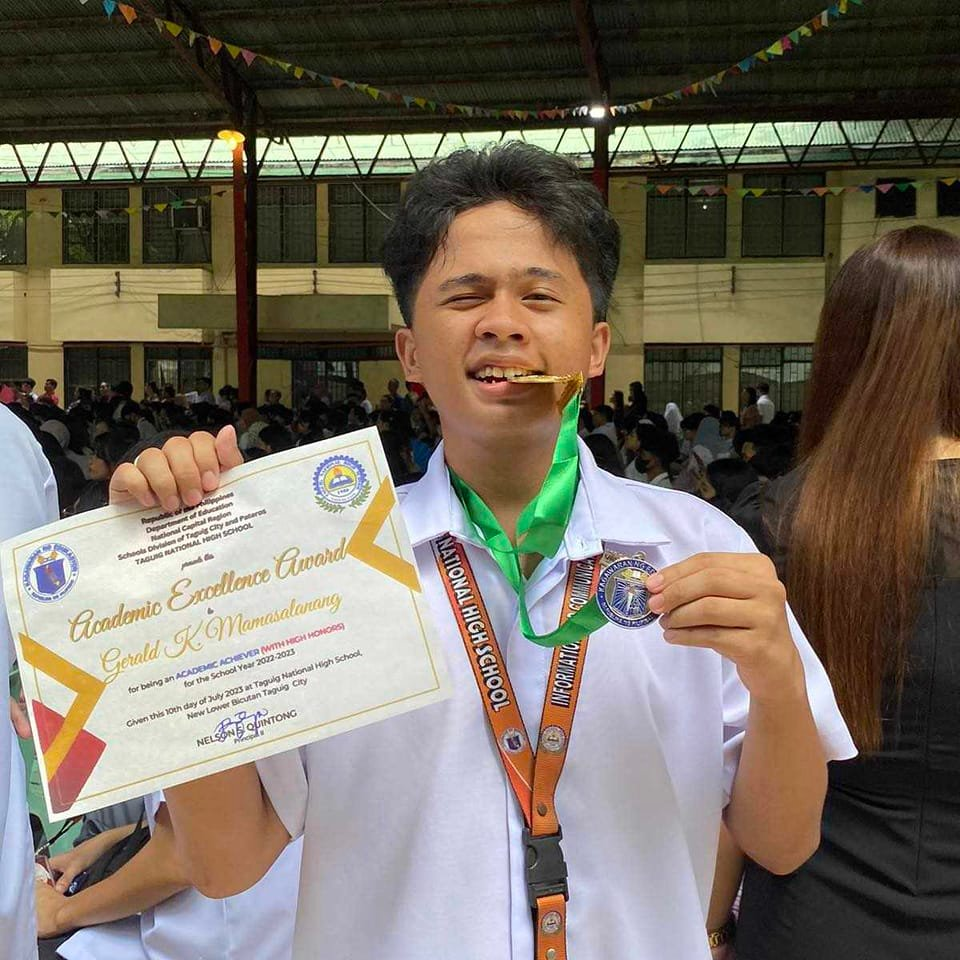
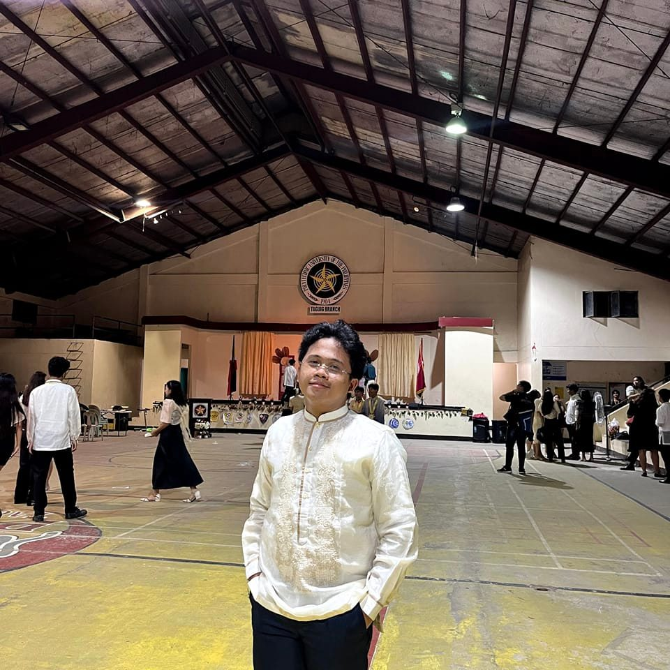
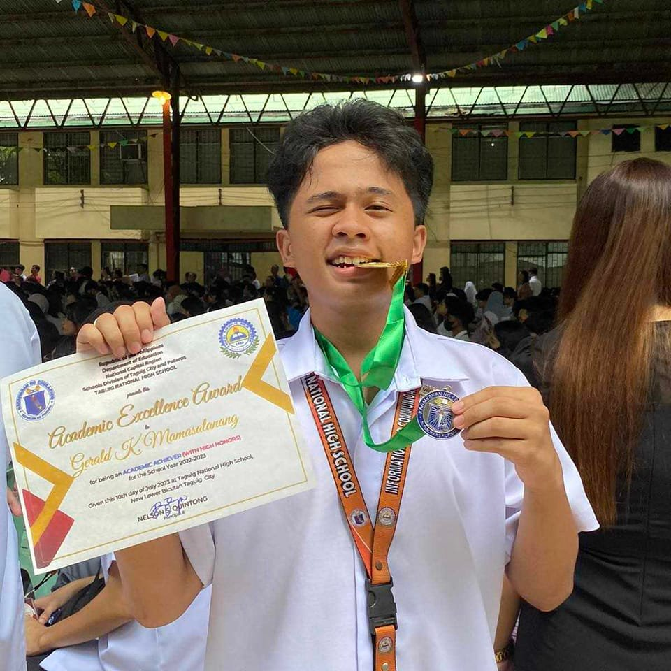

Gallery
 




I really appreciate your hardwork, dedication and attention to detail, which consistently helps our team stay organized and meet deadlines with ease
- Ivan DelumenGerald Mamasalanang is an exceptional professional with a remarkable ability to tackle challenges with creativity and precision. His dedication to delivering high-quality work and his collaborative spirit make him a true asset to any team. It’s always a pleasure to work with someone as talented and reliable as Gerald.
- Daniel Victorioso


I've watched you turn your passion for technology into real skills, and it's clear—you’re built for success in I.T.! Your problem-solving mindset, dedication to learning, and unstoppable drive set you apart. The tech world better be ready, because you're about to make waves!
- Simone Jake Reyes